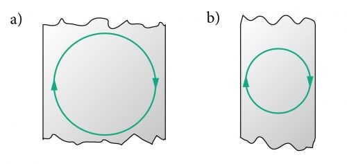

Lenzi reegel ja induktsiooniseaduse rakendused
Lenzi reegel
Kujutame ette olukorda, kus kasvava magnetvälja tõttu tekkinud induktsioonivool on sellise suunaga, et ta tekitab samasuunalise magnetvälja ja seega võimendab teda tekitanud magnetvälja, mis omakorda kasvataks induktsioonivoolu, mis omakorda võimendaks magnetvälja jne. Oleksime saanud igavese vooluallika ja kõik meie energiamured oleks lahendatud. Kahjuks see aga energia jäävuse seaduse järgi kehtida ei saa.
Tegelikult on induktsioonivool aga alati selline, et soodustab esialgse olukorra säilitamist, taastamist. Magnetvälja kasvu korral on induktsioonivoolu magnetväli vastupidine takistades magnetvälja kasvu. Magnetvälja kahanemise korral tekib aga samasuunalise magnetväljaga induktsioonivool takistades kahanemist. Seda asjaolu märkas esimesena Emil Lenz (1804-1865), kes formuleeris teadmise ka reeglina.
Toome siin kaks erinevat Lenzi reegli sõnastust:
- Induktsioonivoolu suund on selline, et tema magnetväli kompenseeriks muutust, mis voolu põhjustab;
- Kui välismõju tingib magnetvoo kasvu kontuuris, siis on induktsioonivoolu magnetväli välise magnetvälja suhtes vastassuunaline (takistab kasvu). Kui aga välismõju põhjustab magnetvoo kahanemist, siis on induktsioonivoolu magnetväli välise magnetväljaga samasuunaline (takistab kahanemist).
 Induktsioonivoolud tekivad tegelikult suvalise kujuga metallkehas, millele mõjuv magnetväli piisavalt kiiresti muutub. Selliseid voolusid nimetatakse pöörisvooludeks.
Hõljumine
Kui me asetame mittemagneetuva elektrijuhi (so elektrijuhi, mis ei tõmbu magneti külge) magneti kohale ja hakkame seda magnetitele lähemale nihutama, siis Lenzi reegli järgi tekivad voolud,
mis üritavad magnetvälja muutumise mõju kompenseerida. Juhi ümber tekib püsimagnetile iseloomulik magnetväli, mis üritab juhti tagasi ülespoole lükata. Senikaua kuni magnetväli muutub,
tekib ka tõukejõud ja võiksime märgata hõljumist. Sellised voolud aga lakkavad kiiresti tänu takistusele. Sarnast olukorda saab tekitada aga näiteks väga kiiresti pöörlevate silindritega nagu on näha järgnevates videodes:
Hõljuvad magnetid pöörlevate vasksilindrite kohal
Hõljuv magnet alumiiniumsilindri kohal
Kui soovime hõljumist saavutada efektiivsemalt, oleks meil vaja kasutada ülijuhte, sest nendes tekkinud pöörisvoolud ei lakka. Kahjuks küll peavad ülijuhid enamasti oma omaduste saavutamiseks olema väga madalatel temperatuuridel,
mis seab meile omakorda piirangud kasutamiseks.
Hõljuv ülijuht magnetrelsi kohal
Hõljuv ülikiire rong MagLev
Elektrilised pidurid
Kui mingi metallkeha magnetväljas liigub või liigub magnet metallkeha läheduses, siis pöörisvoolude olemasolu pidurdab seda liikumist (Lenzi reegel). Niimoodi ongi võimalik väga kiiresti pidurdada näiteks lõbustuspargi atraktsiooni. Kasutatakse ka liftides, kraanades, rongides jne.
Magneti kukkumist pidurdatakse vasktorus
Alumiiniumplaadi kiire pidurdumine magnetväljas
Induktsiooniga kuumutamine
Elektrivooluga kaasneb tänu takistusele soojushulga eraldumine, mida kasutatakse ära induktsioonpliitides, kus kuumus tekib otse potipõhjas tänu elektromagnetilisele induktsioonile ja pöörisvooludele. Soojusülekanne pliidilt potile jääb ära ning saame energiasäästlikuma lahenduse. Samuti pole pliidiplaat ise nii kuum.
Alumiinium hõljub ja sulab kiiresti muutuvas magnetväljas
Lõpetuseks üks video, mis demonstreerib kõiki mainitud nähtusi üheaegselt:
Hõljuv grill